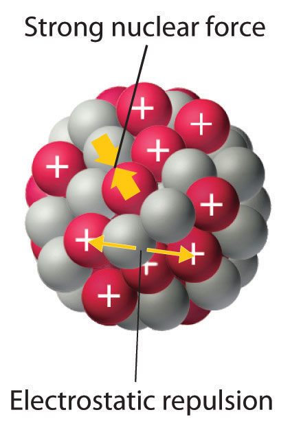
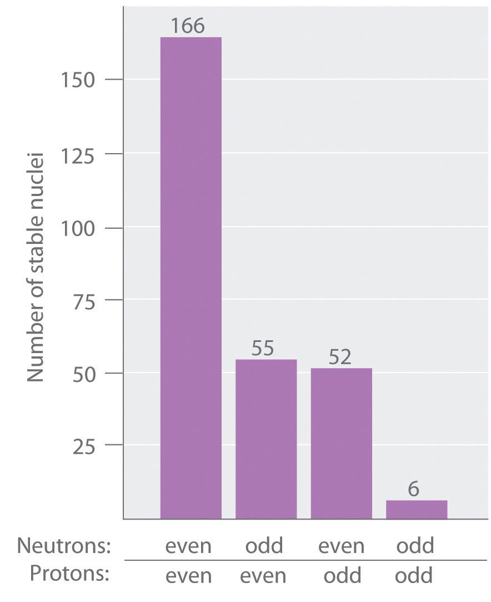

Although most of the known elements have at least one isotope whose atomic nucleus is stable indefinitely, all elements have isotopes that are unstable and disintegrate, or decay, at measurable rates by emitting radiation. Some elements have no stable isotopes and eventually decay to other elements. In contrast to the chemical reactions that were the main focus of earlier chapters and are due to changes in the arrangements of the valence electrons of atoms, the process of nuclear decay results in changes inside an atomic nucleus. We begin our discussion of nuclear reactions by reviewing the conventions used to describe the components of the nucleus.
As you learned in Chapter 1 "Introduction to Chemistry", each element can be represented by the notation where A, the mass number, is the sum of the number of protons and the number of neutrons, and Z, the atomic number, is the number of protons. The protons and neutrons that make up the nucleus of an atom are called nucleonsThe protons and neutrons that make up the nucleus of an atom., and an atom with a particular number of protons and neutrons is called a nuclideAn atom with a particular number of nucleons.. Nuclides with the same number of protons but different numbers of neutrons are called isotopes. Isotopes can also be represented by an alternative notation that uses the name of the element followed by the mass number, such as carbon-12. The stable isotopes of oxygen, for example, can be represented in any of the following ways:
Because the number of neutrons is equal to A − Z, we see that the first isotope of oxygen has 8 neutrons, the second isotope 9 neutrons, and the third isotope 10 neutrons. Isotopes of all naturally occurring elements on Earth are present in nearly fixed proportions, with each proportion constituting an isotope’s natural abundance. For example, in a typical terrestrial sample of oxygen, 99.76% of the O atoms is oxygen-16, 0.20% is oxygen-18, and 0.04% is oxygen-17.
Any nucleus that is unstable and decays spontaneously is said to be radioactiveAny nucleus that is unstable and decays spontaneously, emitting particles and electromagnetic radiation., emitting subatomic particles and electromagnetic radiation. The emissions are collectively called radioactivity and can be measured. Isotopes that emit radiation are called radioisotopesAn isotope that emits radiation.. As you learned in Chapter 14 "Chemical Kinetics", the rate at which radioactive decay occurs is characteristic of the isotope and is generally reported as a half-life (t1/2), the amount of time required for half of the initial number of nuclei present to decay in a first-order reaction. (For more information on half-life, see Chapter 14 "Chemical Kinetics", Section 14.5 "Half-Lives and Radioactive Decay Kinetics".) An isotope’s half-life can range from fractions of a second to billions of years and, among other applications, can be used to measure the age of ancient objects. Example 1 and its corresponding exercise review the calculations involving radioactive decay rates and half-lives.
Fort Rock Cave in Oregon is the site where archaeologists discovered several Indian sandals, the oldest ever found in Oregon. Analysis of the 14C content of the sagebrush used to make the sandals gave an average decay rate of 5.1 disintegrations per minute (dpm) per gram of carbon. The current 14C/12C ratio in living organisms is 1.3 × 10−12, with a decay rate of 15 dpm/g C. How long ago was the sagebrush in the sandals cut? The half-life of 14C is 5730 yr.
Given: radioisotope, current 14C/12C ratio, initial decay rate, final decay rate, and half-life
Asked for: age
Strategy:
A Use Equation 14.30 to calculate N0/N, the ratio of the number of atoms of 14C originally present in the sample to the number of atoms now present.
B Substitute the value for the half-life of 14C into Equation 14.28 to obtain the rate constant for the reaction.
C Substitute the calculated values for N0/N and the rate constant into Equation 14.32 to obtain the elapsed time t.
Solution:
We can use the integrated rate law for a first-order nuclear reaction (Equation 14.32) to calculate the amount of time that has passed since the sagebrush was cut to make the sandals:
A From Equation 14.30, we know that A = kN. We can therefore use the initial and final activities (A0 = 15 and A = 5.1) to calculate N0/N:
B Now we can calculate the rate constant k from the half-life of the reaction (5730 yr) using Equation 14.28:
Rearranging this equation to solve for k,
C Substituting the calculated values into the equation for t,
Thus the sagebrush in the sandals is about 8900 yr old.
Exercise
While trying to find a suitable way to protect his own burial chamber, the ancient Egyptian pharaoh Sneferu developed the pyramid, a burial structure that protected desert graves from thieves and exposure to wind. Analysis of the 14C content of several items in pyramids built during his reign gave an average decay rate of 8.6 dpm/g C. When were the objects in the chamber created?
Answer: about 4600 yr ago, or about 2600 BC
As discussed in Chapter 1 "Introduction to Chemistry", the nucleus of an atom occupies a tiny fraction of the volume of an atom and contains the number of protons and neutrons that is characteristic of a given isotope. Electrostatic repulsions would normally cause the positively charged protons to repel each other, but the nucleus does not fly apart because of the strong nuclear forceAn extremely powerful but very short-range attractive force between nucleons that keeps the nucleus of an atom from flying apart (due to electrostatic repulsions between protons)., an extremely powerful but very short-range attractive force between nucleons (Figure 20.1 "Competing Interactions within the Atomic Nucleus"). All stable nuclei except the hydrogen-1 nucleus (1H) contain at least one neutron to overcome the electrostatic repulsion between protons. As the number of protons in the nucleus increases, the number of neutrons needed for a stable nucleus increases even more rapidly. Too many protons (or too few neutrons) in the nucleus result in an imbalance between forces, which leads to nuclear instability.
Figure 20.1 Competing Interactions within the Atomic Nucleus
Electrostatic repulsions between positively charged protons would normally cause the nuclei of atoms (except H) to fly apart. In stable atomic nuclei, these repulsions are overcome by the strong nuclear force, a short-range but powerful attractive interaction between nucleons. If the attractive interactions due to the strong nuclear force are weaker than the electrostatic repulsions between protons, the nucleus is unstable, and it will eventually decay.
The relationship between the number of protons and the number of neutrons in stable nuclei, arbitrarily defined as having a half-life longer than 10 times the age of Earth, is shown graphically in Figure 20.2 "The Relationship between Nuclear Stability and the Neutron-to-Proton Ratio". The stable isotopes form a “peninsula of stability” in a “sea of instability.” Only two stable isotopes, 1H and 3He, have a neutron-to-proton ratio less than 1. Several stable isotopes of light atoms have a neutron-to-proton ratio equal to 1 (e.g., and ). All other stable nuclei have a higher neutron-to-proton ratio, which increases steadily to about 1.5 for the heaviest nuclei. Regardless of the number of neutrons, however, all elements with Z > 83 are unstable and radioactive.
Figure 20.2 The Relationship between Nuclear Stability and the Neutron-to-Proton Ratio

In this plot of the number of neutrons versus the number of protons, each black point corresponds to a stable nucleus. In this classification, a stable nucleus is arbitrarily defined as one with a half-life longer than 46 billion years (10 times the age of Earth). As the number of protons (the atomic number) increases, the number of neutrons required for a stable nucleus increases even more rapidly. Isotopes shown in red, yellow, green, and blue are progressively less stable and more radioactive; the farther an isotope is from the diagonal band of stable isotopes, the shorter its half-life. The purple dots indicate superheavy nuclei that are predicted to be relatively stable, meaning that they are expected to be radioactive but to have relatively long half-lives. In most cases, these elements have not yet been observed or synthesized.
Data source: National Nuclear Data Center, Brookhaven National Laboratory, Evaluated Nuclear Structure Data File (ENSDF), Chart of Nuclides, http://www.nndc.bnl.gov/chart.
As shown in Figure 20.3 "The Relationship between the Number of Protons and the Number of Neutrons and Nuclear Stability", more than half of the stable nuclei (166 out of 279) have even numbers of both neutrons and protons; only 6 of the 279 stable nuclei do not have odd numbers of both. Moreover, certain numbers of neutrons or protons result in especially stable nuclei; these are the so-called magic numbers 2, 8, 20, 50, 82, and 126. For example, tin (Z = 50) has 10 stable isotopes, but the elements on either side of tin in the periodic table, indium (Z = 49) and antimony (Z = 51), have only 2 stable isotopes each. Nuclei with magic numbers of both protons and neutrons are said to be “doubly magic” and are even more stable. Examples of elements with doubly magic nuclei are with 2 protons and 2 neutrons, and with 82 protons and 126 neutrons, which is the heaviest known stable isotope of any element.
Figure 20.3 The Relationship between the Number of Protons and the Number of Neutrons and Nuclear Stability
Most stable nuclei contain even numbers of both neutrons and protons.
The pattern of stability suggested by the magic numbers of nucleons is reminiscent of the stability associated with the closed-shell electron configurations of the noble gases in group 18 and has led to the hypothesis that the nucleus contains shells of nucleons that are in some ways analogous to the shells occupied by electrons in an atom. As shown in Figure 20.2 "The Relationship between Nuclear Stability and the Neutron-to-Proton Ratio", the “peninsula” of stable isotopes is surrounded by a “reef” of radioactive isotopes, which are stable enough to exist for varying lengths of time before they eventually decay to produce other nuclei.
Classify each nuclide as stable or radioactive.
Given: mass number and atomic number
Asked for: predicted nuclear stability
Strategy:
Use the number of protons, the neutron-to-proton ratio, and the presence of even or odd numbers of neutrons and protons to predict the stability or radioactivity of each nuclide.
Solution:
Exercise
Classify each nuclide as stable or radioactive.
Answer:
In addition to the “peninsula of stability,” Figure 20.2 "The Relationship between Nuclear Stability and the Neutron-to-Proton Ratio" shows a small “island of stability” that is predicted to exist in the upper right corner. This island corresponds to the superheavy elementsAn element with an atomic number near the magic number of 126., with atomic numbers near the magic number 126. Because the next magic number for neutrons should be 184, it was suggested that an element with 114 protons and 184 neutrons might be stable enough to exist in nature. Although these claims were met with skepticism for many years, since 1999 a few atoms of isotopes with Z = 114 and Z = 116 have been prepared and found to be surprisingly stable. One isotope of element 114 lasts 2.7 seconds before decaying, described as an “eternity” by nuclear chemists. Moreover, there is recent evidence for the existence of a nucleus with A = 292 that was found in 232Th. With an estimated half-life greater than 108 years, the isotope is particularly stable. Its measured mass is consistent with predictions for the mass of an isotope with Z = 122. Thus a number of relatively long-lived nuclei may well be accessible among the superheavy elements.
Subatomic particles of the nucleus (protons and neutrons) are called nucleons. A nuclide is an atom with a particular number of protons and neutrons. An unstable nucleus that decays spontaneously is radioactive, and its emissions are collectively called radioactivity. Isotopes that emit radiation are called radioisotopes. Each nucleon is attracted to other nucleons by the strong nuclear force. Stable nuclei generally have even numbers of both protons and neutrons and a neutron-to-proton ratio of at least 1. Nuclei that contain magic numbers of protons and neutrons are often especially stable. Superheavy elements, with atomic numbers near 126, may even be stable enough to exist in nature.
What distinguishes a nuclear reaction from a chemical reaction? Use an example of each to illustrate the differences.
What do chemists mean when they say a substance is radioactive?
What characterizes an isotope? How is the mass of an isotope of an element related to the atomic mass of the element shown in the periodic table?
In a typical nucleus, why does electrostatic repulsion between protons not destabilize the nucleus? How does the neutron-to-proton ratio affect the stability of an isotope? Why are all isotopes with Z > 83 unstable?
What is the significance of a magic number of protons or neutrons? What is the relationship between the number of stable isotopes of an element and whether the element has a magic number of protons?
Do you expect Bi to have a large number of stable isotopes? Ca? Explain your answers.
Potassium has three common isotopes, 39K, 40K, and 41K, but only potassium-40 is radioactive (a beta emitter). Suggest a reason for the instability of 40K.
Samarium has 11 relatively stable isotopes, but only 4 are nonradioactive. One of these 4 isotopes is 144Sm, which has a lower neutron-to-proton ratio than lighter, radioactive isotopes of samarium. Why is 144Sm more stable?
Isotopes with magic numbers of protons and/or neutrons tend to be especially stable. Elements with magic numbers of protons tend to have more stable isotopes than elements that do not.
Potassium-40 has 19 protons and 21 neutrons. Nuclei with odd numbers of both protons and neutrons tend to be unstable. In addition, the neutron-to-proton ratio is very low for an element with this mass, which decreases nuclear stability.
Write the nuclear symbol for each isotope using notation.
Write the nuclear symbol for each isotope using notation.
Give the number of protons, the number of neutrons, and the neutron-to-proton ratio for each isotope.
Give the number of protons, the number of neutrons, and the neutron-to-proton ratio for each isotope.
Which of these nuclides do you expect to be radioactive? Explain your reasoning.
Which of these nuclides do you expect to be radioactive? Explain your reasoning.